Since each observation records one of  possible values for the dependent variable, , let
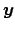 be a matrix with
possible values for the dependent variable, , let
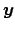 be a matrix with  rows (one for each population) and 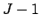 columns. Note that if 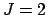 this reduces to the column vector used in the binomial logistic regression model. For each population,
rows (one for each population) and 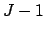 columns. Note that if 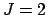 this reduces to the column vector used in the binomial logistic regression model. For each population,  represents the observed counts of the
represents the observed counts of the  value of . Similarly,
value of . Similarly,
 is a matrix of the same dimensions as
where each element
is a matrix of the same dimensions as
where each element  is the probability of observing the
is the probability of observing the  value of the dependent variable for any given observation in the 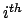 population.
value of the dependent variable for any given observation in the 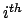 population.
The design matrix of independent variables,
 , remains the same--it contains
, remains the same--it contains  rows and 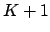 columns where 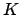 is the number of independent variables and the first element of each row,
rows and 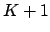 columns where 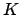 is the number of independent variables and the first element of each row,  , the intercept. Let
, the intercept. Let
 be a matrix with rows and columns, such that each element
be a matrix with rows and columns, such that each element
 contains the parameter estimate for the covariate and the
contains the parameter estimate for the covariate and the  value of the dependent variable.
value of the dependent variable.
For the multinomial logistic regression model, we equate the linear component to the log of the odds of a  observation compared to the
observation compared to the  observation. That is, we will consider the
observation. That is, we will consider the  category to be the omitted or baseline category, where logits of the first categories are constructed with the baseline category in the denominator.
category to be the omitted or baseline category, where logits of the first categories are constructed with the baseline category in the denominator.